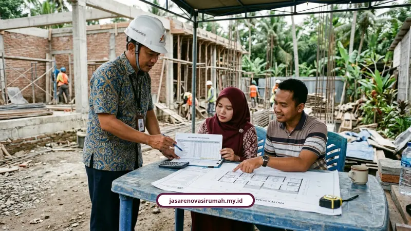

Jasa renovasi rumah Malang dari kami memakai RAB transparan sejak hari pertama survei dan dilindungi garansi struktur resmi 3 bulan. Tidak ada biaya siluman yang muncul belakangan, semua sudah tertulis di atas kertas.
Saya paham betul kenapa banyak orang menunda renovasi rumah bertahun-tahun. Bukan karena tidak mau, tetapi karena trauma mendengar cerita tetangga yang uangnya raib dibawa tukang kabur.
Padahal rumah di Malang adalah aset yang nilainya terus naik kalau dirawat dengan benar. Apalagi untuk rumah di kawasan padat seperti Lowokwaru, Sawojajar, dan Blimbing, rumah nyaman bukan sekadar gaya, tetapi kebutuhan harian.
Kenapa RAB Transparan Jadi Kunci Renovasi Rumah di Malang?
RAB transparan penting karena dia menjadi bukti tertulis harga sebelum tukang pertama kali pegang palu. Tanpa dokumen ini, pemilik rumah dengan mudah menjadi sasaran biaya tambahan yang tiba-tiba muncul.
Kami menyusun setiap RAB secara rinci, item per item, sebelum proyek jalan. Tidak ada istilah "nanti nambah dikit" di tengah pengerjaan.
Kalau penasaran caranya menghitung sendiri volume dan biaya renovasi dari nol, kami juga sudah membahasnya tuntas di artikel estimasi biaya renovasi rumah Malang yang bisa menjadi bekal sebelum konsultasi.
Bahaya Renovasi Tanpa RAB dan Legalitas Resmi
Bahayanya jelas, dompet Anda yang paling dulu kena getahnya. Proyek tanpa RAB dan Surat Perjanjian Kerja (SPK) rawan berujung pada pembengkakan biaya jauh dari rencana awal.
Salah satu penyebab paling umum adalah perubahan konsep desain di tengah jalan. Kebiasaan ini bisa membuat biaya renovasi melonjak sampai 40 persen dari anggaran semula.
Risiko lain dari kontraktor abal-abal juga tidak main-main:
- Uang muka (DP) dibawa kabur tanpa kabar.
- Kualitas material diam-diam diturunkan dari spesifikasi awal.
- Tidak ada garansi jika pekerjaan bermasalah di kemudian hari.
- Risiko kecelakaan kerja tanpa perlindungan BPJS Ketenagakerjaan.
"Kontraktor tanpa legalitas resmi ibarat bom waktu bagi properti Anda. Kerugian tidak hanya soal uang, tetapi juga keamanan struktural rumah dalam jangka panjang," kata salah satu praktisi konstruksi yang sering memberi masukan pada proyek-proyek rumah di Malang.
Estimasi Biaya Renovasi Rumah di Malang Tahun 2026
Estimasi biaya renovasi rumah di Malang tahun 2026 berkisar Rp1.200.000 sampai Rp4.500.000 per meter persegi, tergantung skala pekerjaannya. Berikut rinciannya.

| Skala Pekerjaan | Estimasi | Keterangan |
|---|---|---|
| Renovasi ringan | Rp1.200.000 - Rp1.800.000/m² | Cat ulang, ganti keramik, perbaikan plafon, saniter dasar. |
| Renovasi sedang | Rp2.000.000 - Rp3.200.000/m² | Ganti rangka atap, ubah layout, kitchen set, renovasi fasad. |
| Renovasi berat/total | Rp3.500.000 - Rp4.500.000/m² | Tambah lantai, suntik pondasi, bongkar lebih dari 70% dinding lama. |
Selain itu, bagian ruangan juga memengaruhi biaya. Renovasi kamar mandi 2x2 meter biasanya berada di rentang Rp6,5 juta hingga Rp14 juta per unit, sementara perbaikan atap baja ringan berkisar Rp220 ribu sampai Rp350 ribu per meter persegi.
Sistem Borongan All-In Melindungi Anggaran Anda
Sistem borongan all-in melindungi anggaran karena seluruh material, upah, dan pengawasan sudah dikunci dalam satu RAB dan SPK sejak awal. Anda tidak perlu bolak-balik ke toko bangunan sendiri.
Bandingkan dengan sistem borongan tenaga atau harian, di mana pemilik rumah wajib membeli material sendiri. Kalau salah beli atau kurang stok, proyek bisa berhenti mendadak dan biaya tukang harian ikut membengkak karena molor.
Kami sengaja memilih sistem all-in supaya:
- Harga sudah pasti sejak survei pertama, tidak berubah-ubah.
- Anda tidak perlu jadi mandor dadakan yang berkeliling mencari material.
- Pengawasan proyek dipegang tim internal, bukan tukang lepas.
Layanan Renovasi yang Kami Tangani
Kami menangani berbagai layanan mulai dari desain sampai perizinan bangunan, bukan hanya tukang harian yang datang saat dipanggil. Layanan lengkap kami meliputi:
- Jasa arsitek untuk perencanaan desain yang fungsional, estetis, dan sesuai regulasi.
- Jasa kontraktor rumah untuk pembangunan dan renovasi rumah tinggal dengan manajemen proyek terstruktur.
- Jasa kontraktor bangunan/gedung untuk ruko, fasilitas usaha, dan komersial.
- Jasa renovasi bangunan parsial dan total dari pembaruan fasad, tambah ruang, hingga perbaikan atap dan struktur.
- Jasa desain interior termasuk kitchen set dan material premium.
Didukung lebih dari 25 profesional yang terdiri dari arsitek, insinyur sipil, desainer interior, dan tukang berpengalaman, setiap proyek dikawal dari perencanaan sampai finishing.
Garansi Struktur 3 Bulan dan Kenapa Penting
Garansi struktur 3 bulan adalah jaminan pemeliharaan resmi dari kami setelah kunci rumah diserahkan. Kalau ada masalah struktural dalam masa itu, kami yang turun tangan memperbaiki, bukan Anda yang keluar biaya sendiri.
Garansi ini melekat pada hampir semua pekerjaan berat, mulai retak dinding, pondasi bergeser, sampai atap yang bocor saat musim hujan pegunungan Malang datang.
Kalau ingin tahu lebih detail mengenai cakupan garansi, kami juga sudah menulis panduan lengkapnya di estimasi RAB renovasi rumah aman agar Anda bisa memeriksa kontrak dengan lebih cermat.
Apa Kata Klien yang Sudah Merasakan Layanan Kami?
"Proses renovasi rumah kami berjalan sangat rapi, komunikasi tim selalu jelas, dan hasil akhirnya melebihi ekspektasi," kata Bapak Andi, klien renovasi rumah di Malang.
"Tim arsitek memberi banyak masukan desain yang membuat rumah kami terasa jauh lebih luas dan nyaman," ujar Ibu Sinta, klien desain interior.
"Pengerjaan tepat waktu sesuai kontrak dan ada garansi, jadi kami merasa aman menggunakan jasa ini," tambah Bapak Reza.
Apakah Renovasi Ringan Tetap Butuh RAB Tertulis?
Tetap butuh, meski skalanya kecil seperti ganti keramik atau cat ulang. RAB tertulis mencegah kesalahpahaman harga, sekecil apa pun nilai proyeknya.
Jangan anggap remeh proyek kecil. Renovasi ringan sering disepelekan dan berujung pada biaya tambahan tak terduga di tengah pengerjaan.
Kesimpulan: Saatnya Renovasi Tanpa Was-Was Soal Biaya
Renovasi rumah harusnya jadi momen menyenangkan, bukan sumber stres baru soal duit. Dengan RAB transparan dan garansi struktur 3 bulan, kekhawatiran soal biaya siluman dan tukang kabur bisa diminimalkan sejak awal.
Kami menyediakan konsultasi dan survei lokasi gratis langsung ke rumah Anda di Malang Raya. Silakan cek layanan renovasi kami untuk melihat cakupan pekerjaan yang bisa disesuaikan dengan kebutuhan rumah Anda.
Kantor kami berada di Jl. Soekarno Hatta No. 45, Malang, Jawa Timur. Hubungi 0889-8964-3555 atau email info@jasarenovasirumah.my.id untuk memulai konsultasi.
FAQ Seputar Jasa Renovasi Rumah Malang

Naura Regyna Putri
Penulis Profesional & Praktisi Konstruksi
Naura Regyna Putri adalah seorang penulis profesional yang memiliki ketertarikan mendalam pada dunia arsitektur dan konstruksi. Dengan pengalaman bertahun-tahun mengamati tren renovasi rumah, ia aktif membagikan panduan praktis, tips RAB, dan wawasan seputar material bangunan untuk membantu pemilik rumah mewujudkan hunian impian mereka dengan anggaran yang efisien.